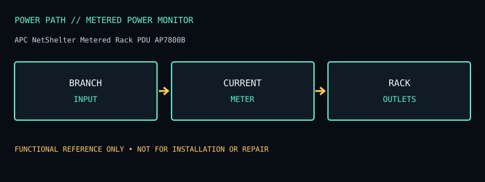

[ METERED POWER MONITOR // IDENTIFIED MODEL ]
APC NetShelter Metered Rack PDU AP7800B
1U local-metering PDU, 15 A / 100–120 V with eight NEMA 5-15R outlets; no backup. This record documents the named model only; check the unit nameplate and its matching manufacturer documentation before service or installation.

ARCHIVAL IDENTIFICATION: Preserve the complete SKU, suffix, region, date code, manual revision, installed battery part number and observed condition. Similar model names do not prove identical hardware.
Model specifications & service record
| Subcategory | Metered power monitors |
|---|---|
| Topology / function | Metered rack power distribution unit (PDU), not a UPS or surge protector. It distributes branch-circuit power and locally displays input current. |
| VA and W ratings / outlets | 100/120 V, 15 A input; 1U rack unit; eight NEMA 5-15R outlets; 1440 VA maximum at 120 V on the published AP7800B specification. |
| Battery / replacement | No battery. |
| Runtime / operating conditions | No stored-power or runtime claim. |
| Interfaces / monitoring | Local current-meter display; this basic metered model is not a switched/network-managed PDU, and its meter is not per-outlet energy accounting. Verify display units and model-specific monitoring capabilities in the manual. |
| Electrical safety / limits | Do not exceed the 15 A branch/input limit; total load includes all outlets. It does not provide UPS backup or necessarily provide surge protection. Use a properly rated, grounded rack circuit and secure the PDU to the rack per installation instructions. |
| Revision / variant identification | AP7800B is the 100/120 V, 1U, eight 5-15 outlet metered SKU. Do not confuse with AP7800/AP7801, AP7811, or switched/208 V variants; outlet, voltage, metering/network capabilities, and mounting differ. |
Service & archival notes
- Record nameplate and battery labels before removal; separate measured behavior from manufacturer ratings and record load, input conditions, temperature and test date.
- Do not open an energized unit. Mains equipment and batteries can retain hazardous energy; have battery installation, disposal, and electrical work performed according to the product manual and local rules.
- For archival units, document missing covers, damaged cords, alarms, failed indicators, battery age/swelling/leakage, and any substituted part. Do not return a damaged unit to service.
- Product and manual links below are the primary reference for the named regional model. Verify exact revisions rather than transferring ratings from a similarly named SKU.
Manufacturer sources
- Manufacturer product specifications — APC NetShelter Metered Rack PDU AP7800BModel-specific ratings, regional identity, configuration and available documentation.
- Manufacturer manual / product documentation and runtime referenceUse the manual matching the complete model code and revision. Runtime statements above describe manufacturer chart/conditions where available, not a guaranteed result for an aged unit.